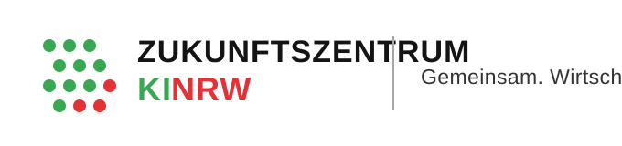

KI Strategie & Data Governance
KI-Infrastruktur & Data Governance Workshop

Praxisorientierter Workshop für kleine und mittelständische Unternehmen zu KI-Infrastruktur, Data Governance und regulatorischen Anforderungen. Im Fokus standen passende Datenarchitekturen, Governance-Grundlagen und realistische nächste Schritte auf dem Weg zu produktiven KI-Lösungen.